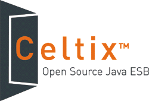

|
Celtix
·
·
·
·
·
·
·
·
·
·
·
·
·
·
·
|
Celtix: The Open Source Java Enterprise Service Bus
|

|
Celtix delivers a Java enterprise service bus (ESB) runtime and set of APIs that make it easy to add transports, message formats, and security features. The goal is to simplify the construction, integration and flexible reuse of technical and business components using a standards-based, service-oriented architecture.
|
Latest Updates
May 8, 2006
Celtix 1.0 is released and available for download at http://forge.objectweb.org/project/showfiles.php?group_id=192. Celtix 1.0 is also available as a Maven distribution at, http://maven.objectweb.org/maven2.
Celtix 1.0 provides users with a feature-rich, open source ESB runtime that can support any organization’s adoption of Service Oriented Architecture (SOA) in the enterprise.
The Celtix project was initiated in June 2005 under the sponsorship of IONA. Celtix 1.0 is the result of the fifth consecutive on-schedule delivery of key project milestones and the acceptance of the current Celtix build by the ObjectWeb community. The availability of an open source ESB that offers comparable features and functionality to many commercially available ESB products provides users with an effective, standards-based foundation from which their SOA initiatives can be rapidly built and extended.
The features contained in this release include:
- Persistence support for Reliable Messaging based on Apache Derby
- HTTPS based security support
- Support for Javascript based webservices.
- Support for changing configuration dynamically
- Management support for additional Celtix components
- Support for wsdlvalidator commandline tool
- Routing support for all Celtix bindings and transports
- Enhanced routing capabilities
- WS-Addressing support for JMS based services
- Interoperability with .NET.
- Support for Maven 2.0.4
- Support for running Celtix inside Apache Tuscany
- Support for Webservice callbacks
Features completed in previous releases include:
- Support for JAX-WS Dispatch APIs
- Support for JAX-WS Provider APIs
- Support for non-wrapper Doc/Literal style
- Celtix based javatowsdl tool
- Celtix based wsdltojava tool
- First cut of transport APIs
- Enhanced binding API for better pluggability
- Support for Protocol Handlers
|
- Support for Logical Handlers
- Support for Contexts
- SOAP 1.1 support for doc/rpc literal
- Support for SOAP 1.1 faults
- Support for SOAP 1.1 headers
- Support for JAX-WS Sync APIs
- Support for JAX-WS One-Way APIs
- Support for inout and out variables
|
- HTTP 1.1 transport
- HTTP servlet transport
- JMS transport based on Active MQ
- Support for WS-Addressing
- Support for JAX-WS async client APIs
- Policy based configuration
- Support for StreamHandler APIs
- WS-RM based support for Webservices Reliability
|
- Support for JMX based management
- XML Binding
- New commandline tools: xsd2wsdl, wsdl2xml, wsdl2soap, wsdl2service
- Native integration into Apache Geronimo J2EE appserver
- Support for validating application data against XMLSchema
- Enhanced support for deploying celtix services into a servlet container based on feedback from Jonas J2EE appserver project
|
April 5, 2006
The documentation team has added a guide for using the Celtix JMS transport. It includes information on:
- specifying JMS address information
- setting endpoint conneciton behavior
- using the internal contexts in JMS consumer endpoints
In addition, the command line tools guide has been updated.
In the News
| |